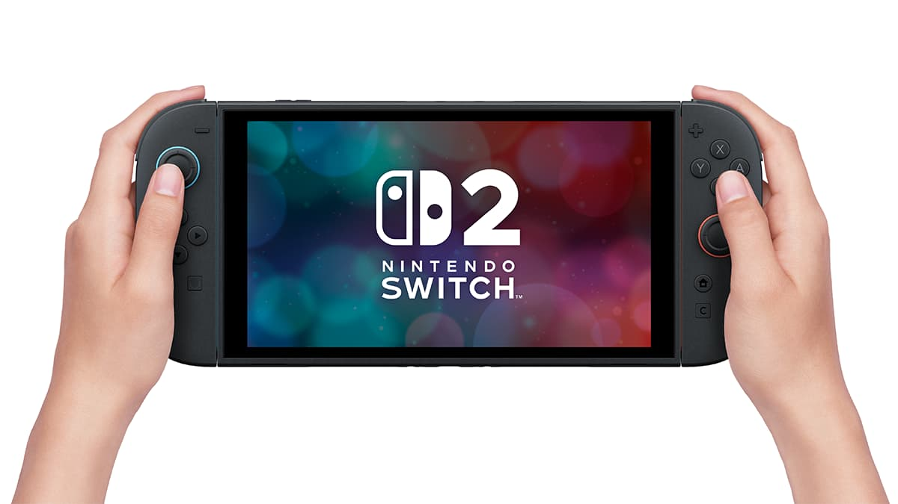
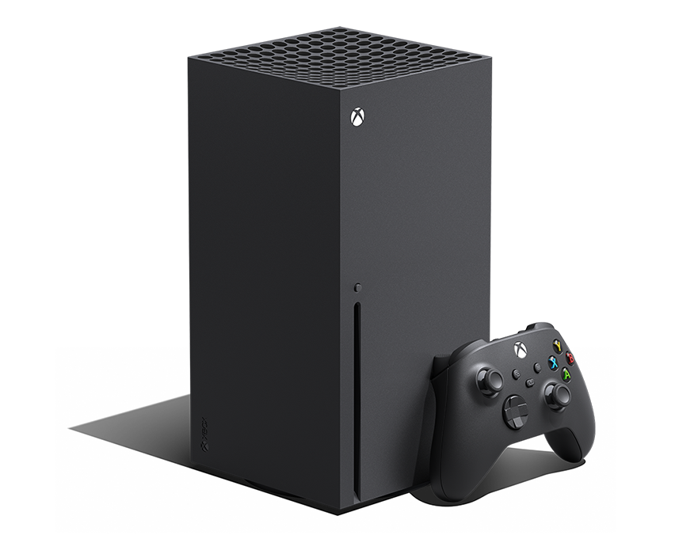

NintendoSwitch 2
NintendoSwitch 2
View official product ↗ PlayStationPS5 ProView official product ↗ XboxSeries X
View official product ↗ Hardware imagery is separate from the 2010–2023 dataset.Beyond catalog counts.
These charts use distinct game IDs where a game-level answer is needed. Platform comparisons count each game once per selected platform.
Loading deeper analyses…
What the numbers mean
Source and unit
PlayMyData v2 by D’Angelo, Di Sipio, Politowsky, and Rubei, published on Zenodo under CC BY 4.0. It combines IGDB game metadata with HowLongToBeat completion and user review data. One cleaned row is one game ID on one selected Nintendo, PlayStation, or Xbox platform. The date is the game’s first release date anywhere, not its release date on that console.
Cleaning and measures
Reading the comparisons
Platform and family counts are game–platform entries; a game on multiple platforms counts more than once. “Unique games” deduplicates by game ID. Multiplatform share is the fraction of unique games listed in more than one of the three families. Primary genre uses the first listed IGDB genre. Average review score includes only positive review counts. Median main-story hours includes only positive hour estimates. Coverage is games with at least one user review divided by all entries in the family. The dashboard additionally hides hardware launched after a selected year from its filtered figures. Because the source lacks platform-specific game release dates, a selected year does not establish when a game became available on that console. The source is a catalog snapshot, not complete market sales or all historical releases; 2023 stops in November.
Data source: PlayMyData v2 ↗ · Decorative game covers: Steam store artwork ↗ (respective publishers). Product photos and brand symbols: Nintendo, PlayStation, Xbox, Simple Icons, and Font Awesome; details in README.